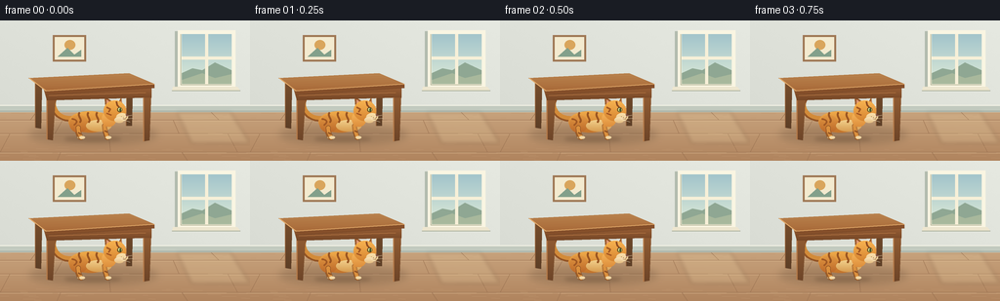
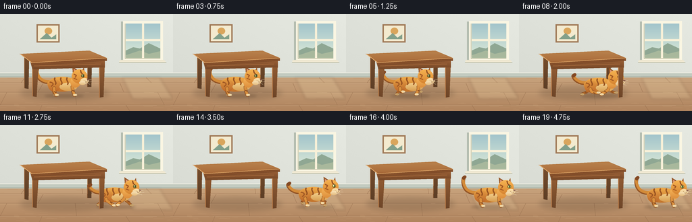

CODING AGENTS AS PIXEL WORLD MODELS
traex/GPT-6.1-Sol · dynamic_spatial_relationship_0016
点击播放 · 原生 RGB 像素
逐轮保存的候选
回放视频、检查图与代码变化。
每份候选均可单独播放。实际图片检查记录在下方工具轨迹中。
候选 01播放与检查图
点击播放 · 原生 RGB 像素


展开代码变化
--- 上一保存版本
+++ 本次保存版本
@@ -0,0 +1,185 @@
+from pathlib import Path
+import math
+import numpy as np
+from PIL import Image, ImageDraw, ImageFilter
+import artifact_io
+
+ROOT=Path(__file__).resolve().parent
+W,H,S=256,144,4
+rng=np.random.default_rng(17)
+
+class Canvas:
+ def __init__(self,im): self.im=im; self.d=ImageDraw.Draw(im)
+ def poly(self,pts,fill): self.d.polygon([(round(x*S),round(y*S)) for x,y in pts],fill=fill)
+ def line(self,pts,fill,width=1): self.d.line([(round(x*S),round(y*S)) for x,y in pts],fill=fill,width=max(1,round(width*S)),joint='curve')
+ def ellipse(self,box,fill): self.d.ellipse(tuple(round(v*S) for v in box),fill=fill)
+ def grad(self,kind,shape,top,bottom):
+ mask=Image.new('L',self.im.size); md=ImageDraw.Draw(mask)
+ if kind=='ellipse': md.ellipse(tuple(round(v*S) for v in shape),fill=255); ymin,ymax=shape[1],shape[3]
+ else: md.polygon([(round(x*S),round(y*S)) for x,y in shape],fill=255); ymin=min(p[1] for p in shape); ymax=max(p[1] for p in shape)
+ yy=np.arange(H*S)[:,None]; f=np.clip((yy-ymin*S)/max(1,(ymax-ymin)*S),0,1)
+ a=np.array(top); b=np.array(bottom)
+ vals=(a[None,None,:]*(1-f[:,:,None])+b[None,None,:]*f[:,:,None]).astype('uint8')
+ vals=np.broadcast_to(vals,(H*S,W*S,3)).copy()
+ self.im.paste(Image.fromarray(vals),mask=mask)
+ def curve(self,points,color,width):
+ a,b,c,d=map(np.array,points); t=np.linspace(0,1,45)[:,None]
+ p=(1-t)**3*a+3*(1-t)**2*t*b+3*(1-t)*t*t*c+t**3*d
+ self.line(p,color,width)
+ r=width/2
+ for x,y in [p[0],p[-1]]: self.ellipse((x-r,y-r,x+r,y+r),color)
+
+# Warm, softly lit room, fully generated from geometry.
+yy,xx=np.mgrid[0:H*S,0:W*S]; xx=xx/S; yy=yy/S
+wall=np.zeros((H*S,W*S,3),dtype=float)
+for ch,c in enumerate([222,225,217]): wall[:,:,ch]=c+8*(xx/W)-.055*yy
+noise=rng.normal(0,.55,(H*S,W*S))
+wall=np.clip(wall+noise[:,:,None],0,255).astype('uint8')
+bg=Image.fromarray(wall); c=Canvas(bg)
+c.poly([(0,91),(256,91),(256,144),(0,144)],(182,141,103))
+c.grad('poly',[(0,94),(256,94),(256,144),(0,144)],(199,162,124),(176,132,94))
+# Perspective oak floorboards.
+for y in [102,116,135]:
+ c.line([(0,y),(256,y)],(156,116,83),.5)
+ c.line([(0,y+0.65),(256,y+.65)],(214,177,137),.5)
+for x,y0,y1,off in [(37,94,102,-6),(121,94,102,1),(216,94,102,8),(64,102,116,-8),(177,102,116,6),(10,116,135,-10),(111,116,135,2),(233,116,135,10),(62,135,144,-4),(186,135,144,6)]:
+ c.line([(x,y0),(x+off,y1)],(156,116,83),.55)
+for k in range(90):
+ x=rng.uniform(0,256); y=rng.uniform(95,143)
+ c.line([(x,y),(min(256,x+rng.uniform(3,17)),y+.08)],(191,149,110),.2)
+c.poly([(0,87),(256,87),(256,94),(0,94)],(194,202,191))
+c.line([(0,87),(256,87)],(243,242,229),1)
+c.line([(0,93),(256,93)],(158,166,154),.65)
+# Window, calm blue sky and distant green hills.
+c.poly([(179,11),(239,11),(239,72),(179,72)],(178,187,174))
+c.poly([(182,10),(241,10),(241,70),(182,70)],(249,245,226))
+c.grad('poly',[(186,14),(237,14),(237,65),(186,65)],(162,196,203),(222,235,216))
+c.poly([(186,54),(197,49),(207,51),(220,43),(237,51),(237,65),(186,65)],(143,167,147))
+c.poly([(186,61),(207,54),(220,59),(237,55),(237,65),(186,65)],(168,184,156))
+c.poly([(210,14),(213,14),(213,66),(210,66)],(247,240,216))
+c.poly([(185,37),(238,37),(238,40),(185,40)],(247,240,216))
+c.line([(185,14),(185,66),(237,66)],(180,180,151),.7)
+c.poly([(177,68),(243,68),(246,72),(176,72)],(237,230,207))
+c.line([(176,72),(246,72)],(166,172,151),.7)
+# A small wall picture, subdued and not in the cat's path.
+c.poly([(54,15),(88,15),(88,42),(54,42)],(158,119,84))
+c.poly([(56,17),(86,17),(86,40),(56,40)],(243,234,207))
+c.ellipse((66,20,77,30),(217,165,92))
+c.poly([(59,37),(69,28),(76,35),(83,30),(83,37)],(131,160,139))
+# Soft angled daylight on the floor.
+light=Image.new('RGBA',bg.size); lc=Canvas(light)
+lc.poly([(181,94),(236,94),(256,126),(196,126)],(255,239,190,36))
+light=light.filter(ImageFilter.GaussianBlur(2*S)); bg=Image.alpha_composite(bg.convert('RGBA'),light).convert('RGB')
+
+# Table geometry: the cat is between the legs, beneath the tabletop.
+def table_back(im):
+ c=Canvas(im)
+ sh=Image.new('RGBA',im.size); sc=Canvas(sh)
+ sc.ellipse((30,107,161,127),(63,45,31,50)); sh=sh.filter(ImageFilter.GaussianBlur(4*S))
+ im.paste(Image.alpha_composite(im.convert('RGBA'),sh).convert('RGB'))
+ c=Canvas(im)
+ for pts in [[(36,63),(43,64),(42,111),(36,110)],[(130,60),(136,62),(135,108),(129,108)]]:
+ c.grad('poly',pts,(118,77,44),(93,62,38))
+ c.line([pts[0],pts[-1]],(154,103,62),.65)
+
+def table_front(im):
+ c=Canvas(im)
+ # two tapered front legs and their bevels
+ for pts in [[(48,73),(57,75),(54,123),(48,122)],[(147,72),(155,70),(153,123),(147,124)]]:
+ c.grad('poly',pts,(150,95,53),(109,69,40))
+ c.line([pts[0],pts[-1]],(181,122,73),1.2)
+ c.grad('poly',[(44,68),(155,64),(155,79),(48,82)],(165,103,58),(116,70,38))
+ c.line([(50,77),(149,74)],(184,121,70),.75)
+ c.grad('poly',[(29,59),(132,54),(158,65),(47,72)],(186,132,79),(168,105,56))
+ # Long grain runs along the broad tabletop.
+ for j in range(5):
+ y=59+j*2.0
+ c.line([(34+j*3,y),(134+j*3,y-4)],(177,117,64),.45)
+ c.poly([(47,72),(158,65),(158,69),(47,76)],(133,79,42))
+ c.line([(30,59),(47,72),(158,65)],(224,168,105),.9)
+ c.line([(47,76),(158,69)],(103,61,35),.5)
+
+
+def cat(im,x,ground,t,running):
+ phase=t*math.pi*2
+ bob=1.5*math.sin(phase*2) if running else .15*math.sin(t)
+ # local body origin; the paws sit close to the floor.
+ by=ground-15+bob
+ c=Canvas(im)
+ shadow=Image.new('RGBA',im.size); sc=Canvas(shadow)
+ sc.ellipse((x-27,ground-1,x+31,ground+4),(72,48,28,58))
+ shadow=shadow.filter(ImageFilter.GaussianBlur(1.9*S))
+ im.paste(Image.alpha_composite(im.convert('RGBA'),shadow).convert('RGB'))
+ c=Canvas(im)
+ def E(b,col): c.ellipse((x+b[0],by+b[1],x+b[2],by+b[3]),col)
+ def G(b,a,z): c.grad('ellipse',(x+b[0],by+b[1],x+b[2],by+b[3]),a,z)
+ def L(p,col,w=1): c.line([(x+a,by+b) for a,b in p],col,w)
+ def P(p,col): c.poly([(x+a,by+b) for a,b in p],col)
+ def C(p,col,w): c.curve([(x+a,by+b) for a,b in p],col,w)
+ # Lifted, long curling tail: an unmistakable feline silhouette.
+ tip=-12+2*math.sin(t) if not running else -5+3*math.sin(phase)
+ C([(-19,-4),(-37,-3),(-40,-17),(-38,tip-12)],(147,84,37),5.6)
+ C([(-19,-5),(-36,-4),(-39,-18),(-38,tip-12)],(211,139,57),4.1)
+ C([(-38,tip-12),(-38,tip-13),(-37,tip-14),(-36,tip-14)],(130,72,35),4.2)
+ # Far legs, then torso, then near legs.
+ def leg(hip,angle,near):
+ hx,hy=hip
+ if running:
+ knee=(hx+7*math.sin(angle),hy+6)
+ paw=(hx+12*math.sin(angle+.3),14-bob-4*max(0,math.cos(angle)))
+ else:
+ knee=(hx+1,hy+6); paw=(hx+3,15-bob)
+ col=(174,104,42) if not near else (218,144,62)
+ C([(hx,hy),(hx,hy+4),knee,paw],(135,77,34),4.8 if near else 4.1)
+ C([(hx,hy),(hx,hy+4),knee,paw],col,3.8 if near else 3.1)
+ E((paw[0]-2,paw[1]-1.4,paw[0]+4,paw[1]+1.5),(240,214,164) if near else (193,157,103))
+ L([(knee[0]-1,knee[1]-1),(knee[0]+2,knee[1]+.5)],(142,80,36),1.4)
+ leg((-15,4),phase+math.pi,False); leg((13,3),phase,False)
+ G((-23,-12,21,10),(240,171,74),(194,115,43))
+ G((-22,-8,-3,10),(226,152,65),(187,104,42))
+ G((-5,-3,21,9),(241,206,139),(215,157,81))
+ # Tabby markings curve around the back and flank.
+ for a in [-12,-3,6]:
+ C([(a,-10),(a-2,-7),(a+3,-4),(a+1,-1)],(153,84,33),2)
+ C([(-19,-4),(-13,-3),(-14,0),(-17,2)],(160,88,36),1.7)
+ leg((-13,5),phase,True); leg((14,3),phase+math.pi,True)
+ # Neck ruff and side-profile head.
+ G((11,-12,26,4),(248,185,92),(221,142,60))
+ # Triangular ears, dark rims and warm pink inner ears.
+ P([(15,-14),(14,-27),(25,-20)],(148,85,39))
+ P([(16,-16),(16,-24),(23,-19)],(222,151,117))
+ P([(26,-17),(31,-26),(33,-12)],(159,93,40))
+ P([(28,-17),(31,-23),(32,-15)],(226,155,119))
+ G((13,-23,36,-2),(247,179,81),(214,132,49))
+ # Forehead stripe and cheek stripes.
+ L([(26,-22),(27,-18),(29,-16)],(143,77,33),1.7)
+ L([(16,-16),(20,-14),(18,-11)],(161,86,34),1.7)
+ L([(16,-10),(21,-8)],(161,86,34),1.5)
+ G((26,-10,38,-2),(252,226,174),(232,195,136))
+ G((24,-6,34,0),(249,226,183),(228,188,127))
+ # Sharp forward-facing amber-green eye with vertical pupil.
+ E((27,-16,32,-11),(86,65,30))
+ E((27.7,-15.4,31.6,-11.7),(183,192,99))
+ E((29.5,-15.3,30.4,-11.6),(31,39,27))
+ E((28.4,-15,29.3,-14.1),(255,255,228))
+ P([(35.4,-9),(39,-8),(36.6,-6)],(125,76,62))
+ L([(36.5,-6),(35,-3.9),(32.8,-4)],(132,85,50),.55)
+ # Fine whiskers and dots.
+ for a,b in [((32,-6),(42,-8)),((32,-4.8),(43,-4.5)),((31.5,-3.8),(40,-1))]: L([a,b],(246,236,204),.45)
+ E((31,-6.8,31.6,-6.2),(143,99,57)); E((33,-6,33.6,-5.4),(143,99,57))
+
+frames=[]
+for i in range(20):
+ im=bg.copy(); table_back(im)
+ if i<5:
+ x=93; running=False; t=i*.3
+ elif i<=15:
+ u=(i-5)/10
+ # Run from underneath the tabletop into the open right-hand floor.
+ x=93+119*(u*u*(3-2*u)); running=True; t=(i-5)*.38
+ else:
+ x=212; running=False; t=i*.3
+ cat(im,x,120,t,running)
+ table_front(im)
+ frames.append(np.asarray(im.resize((W,H),Image.Resampling.LANCZOS),dtype=np.uint8))
+artifact_io.save(np.stack(frames),ROOT)
可观测工具轨迹
实际执行的命令与返回图片。
命令 1exit 0
/bin/bash -lc 'ls -la && cat prompt.txt && cat GENERATION_RULES.md && cat task_spec.json'
命令 2exit 0
/bin/bash -lc 'cat artifact_io.py'
命令 3exit 0
/bin/bash -lc "cat > generate.py <<'PY'
from pathlib import Path
import math
import numpy as np
from PIL import Image, ImageDraw, ImageFilter
import artifact_io
ROOT=Path(__file__).resolve().parent
W,H,S=256,144,4
rng=np.random.default_rng(17)
class Canvas:
def __init__(self,im): self.im=im; self.d=ImageDraw.Draw(im)
def poly(self,pts,fill): self.d.polygon([(round(x*S),round(y*S)) for x,y in pts],fill=fill)
def line(self,pts,fill,width=1): self.d.line([(round(x*S),round(y*S)) for x,y in pts],fill=fill,width=max(1,round(width*S)),joint='curve')
def ellipse(self,box,fill): self.d.ellipse(tuple(round(v*S) for v in box),fill=fill)
def grad(self,kind,shape,top,bottom):
mask=Image.new('L',self.im.size); md=ImageDraw.Draw(mask)
if kind=='ellipse': md.ellipse(tuple(round(v*S) for v in shape),fill=255); ymin,ymax=shape[1],shape[3]
else: md.polygon([(round(x*S),round(y*S)) for x,y in shape],fill=255); ymin=min(p[1] for p in shape); ymax=max(p[1] for p in shape)
yy=np.arange(H*S)[:,None]; f=np.clip((yy-ymin*S)/max(1,(ymax-ymin)*S),0,1)
a=np.array(top); b=np.array(bottom)
vals=(a[None,None,:]*(1-f[:,:,None])+b[None,None,:]*f[:,:,None]).astype('uint8')
vals=np.broadcast_to(vals,(H*S,W*S,3)).copy()
self.im.paste(Image.fromarray(vals),mask=mask)
def curve(self,points,color,width):
a,b,c,d=map(np.array,points); t=np.linspace(0,1,45)[:,None]
p=(1-t)**3*a+3*(1-t)**2*t*b+3*(1-t)*t*t*c+t**3*d
self.line(p,color,width)
r=width/2
for x,y in [p[0],p[-1]]: self.ellipse((x-r,y-r,x+r,y+r),color)
# Warm, softly lit room, fully generated from geometry.
yy,xx=np.mgrid[0:H*S,0:W*S]; xx=xx/S; yy=yy/S
wall=np.zeros((H*S,W*S,3),dtype=float)
for ch,c in enumerate([222,225,217]): wall[:,:,ch]=c+8*(xx/W)-.055*yy
noise=rng.normal(0,.55,(H*S,W*S))
wall=np.clip(wall+noise[:,:,None],0,255).astype('uint8')
bg=Image.fromarray(wall); c=Canvas(bg)
c.poly([(0,91),(256,91),(256,144),(0,144)],(182,141,103))
c.grad('poly',[(0,94),(256,94),(256,144),(0,144)],(199,162,124),(176,132,94))
# Perspective oak floorboards.
for y in [102,116,135]:
c.line([(0,y),(256,y)],(156,116,83),.5)
c.line([(0,y+0.65),(256,y+.65)],(214,177,137),.5)
for x,y0,y1,off in [(37,94,102,-6),(121,94,102,1),(216,94,102,8),(64,102,116,-8),(177,102,116,6),(10,116,135,-10),(111,116,135,2),(233,116,135,10),(62,135,144,-4),(186,135,144,6)]:
c.line([(x,y0),(x+off,y1)],(156,116,83),.55)
for k in range(90):
x=rng.uniform(0,256); y=rng.uniform(95,143)
c.line([(x,y),(min(256,x+rng.uniform(3,17)),y+.08)],(191,149,110),.2)
c.poly([(0,87),(256,87),(256,94),(0,94)],(194,202,191))
c.line([(0,87),(256,87)],(243,242,229),1)
c.line([(0,93),(256,93)],(158,166,154),.65)
# Window, calm blue sky and distant green hills.
c.poly([(179,11),(239,11),(239,72),(179,72)],(178,187,174))
c.poly([(182,10),(241,10),(241,70),(182,70)],(249,245,226))
c.grad('poly',[(186,14),(237,14),(237,65),(186,65)],(162,196,203),(222,235,216))
c.poly([(186,54),(197,49),(207,51),(220,43),(237,51),(237,65),(186,65)],(143,167,147))
c.poly([(186,61),(207,54),(220,59),(237,55),(237,65),(186,65)],(168,184,156))
c.poly([(210,14),(213,14),(213,66),(210,66)],(247,240,216))
c.poly([(185,37),(238,37),(238,40),(185,40)],(247,240,216))
c.line([(185,14),(185,66),(237,66)],(180,180,151),.7)
c.poly([(177,68),(243,68),(246,72),(176,72)],(237,230,207))
c.line([(176,72),(246,72)],(166,172,151),.7)
# A small wall picture, subdued and not in the cat's path.
c.poly([(54,15),(88,15),(88,42),(54,42)],(158,119,84))
c.poly([(56,17),(86,17),(86,40),(56,40)],(243,234,207))
c.ellipse((66,20,77,30),(217,165,92))
c.poly([(59,37),(69,28),(76,35),(83,30),(83,37)],(131,160,139))
# Soft angled daylight on the floor.
light=Image.new('RGBA',bg.size); lc=Canvas(light)
lc.poly([(181,94),(236,94),(256,126),(196,126)],(255,239,190,36))
light=light.filter(ImageFilter.GaussianBlur(2*S)); bg=Image.alpha_composite(bg.convert('RGBA'),light).convert('RGB')
# Table geometry: the cat is between the legs, beneath the tabletop.
def table_back(im):
c=Canvas(im)
sh=Image.new('RGBA',im.size); sc=Canvas(sh)
sc.ellipse((30,107,161,127),(63,45,31,50)); sh=sh.filter(ImageFilter.GaussianBlur(4*S))
im.paste(Image.alpha_composite(im.convert('RGBA'),sh).convert('RGB'))
c=Canvas(im)
for pts in [[(36,63),(43,64),(42,111),(36,110)],[(130,60),(136,62),(135,108),(129,108)]]:
c.grad('poly',pts,(118,77,44),(93,62,38))
c.line([pts[0],pts[-1]],(154,103,62),.65)
def table_front(im):
c=Canvas(im)
# two tapered front legs and their bevels
for pts in [[(48,73),(57,75),(54,123),(48,122)],[(147,72),(155,70),(153,123),(147,124)]]:
c.grad('poly',pts,(150,95,53),(109,69,40))
c.line([pts[0],pts[-1]],(181,122,73),1.2)
c.grad('poly',[(44,68),(155,64),(155,79),(48,82)],(165,103,58),(116,70,38))
c.line([(50,77),(149,74)],(184,121,70),.75)
c.grad('poly',[(29,59),(132,54),(158,65),(47,72)],(186,132,79),(168,105,56))
# Long grain runs along the broad tabletop.
for j in range(5):
y=59+j*2.0
c.line([(34+j*3,y),(134+j*3,y-4)],(177,117,64),.45)
c.poly([(47,72),(158,65),(158,69),(47,76)],(133,79,42))
c.line([(30,59),(47,72),(158,65)],(224,168,105),.9)
c.line([(47,76),(158,69)],(103,61,35),.5)
def cat(im,x,ground,t,running):
phase=t*math.pi*2
bob=1.5*math.sin(phase*2) if running else .15*math.sin(t)
# local body origin; the paws sit close to the floor.
by=ground-15+bob
c=Canvas(im)
shadow=Image.new('RGBA',im.size); sc=Canvas(shadow)
sc.ellipse((x-27,ground-1,x+31,ground+4),(72,48,28,58))
shadow=shadow.filter(ImageFilter.GaussianBlur(1.9*S))
im.paste(Image.alpha_composite(im.convert('RGBA'),shadow).convert('RGB'))
c=Canvas(im)
def E(b,col): c.ellipse((x+b[0],by+b[1],x+b[2],by+b[3]),col)
def G(b,a,z): c.grad('ellipse',(x+b[0],by+b[1],x+b[2],by+b[3]),a,z)
def L(p,col,w=1): c.line([(x+a,by+b) for a,b in p],col,w)
def P(p,col): c.poly([(x+a,by+b) for a,b in p],col)
def C(p,col,w): c.curve([(x+a,by+b) for a,b in p],col,w)
# Lifted, long curling tail: an unmistakable feline silhouette.
tip=-12+2*math.sin(t) if not running else -5+3*math.sin(phase)
C([(-19,-4),(-37,-3),(-40,-17),(-38,tip-12)],(147,84,37),5.6)
C([(-19,-5),(-36,-4),(-39,-18),(-38,tip-12)],(211,139,57),4.1)
C([(-38,tip-12),(-38,tip-13),(-37,tip-14),(-36,tip-14)],(130,72,35),4.2)
# Far legs, then torso, then near legs.
def leg(hip,angle,near):
hx,hy=hip
if running:
knee=(hx+7*math.sin(angle),hy+6)
paw=(hx+12*math.sin(angle+.3),14-bob-4*max(0,math.cos(angle)))
else:
knee=(hx+1,hy+6); paw=(hx+3,15-bob)
col=(174,104,42) if not near else (218,144,62)
C([(hx,hy),(hx,hy+4),knee,paw],(135,77,34),4.8 if near else 4.1)
C([(hx,hy),(hx,hy+4),knee,paw],col,3.8 if near else 3.1)
E((paw[0]-2,paw[1]-1.4,paw[0]+4,paw[1]+1.5),(240,214,164) if near else (193,157,103))
L([(knee[0]-1,knee[1]-1),(knee[0]+2,knee[1]+.5)],(142,80,36),1.4)
leg((-15,4),phase+math.pi,False); leg((13,3),phase,False)
G((-23,-12,21,10),(240,171,74),(194,115,43))
G((-22,-8,-3,10),(226,152,65),(187,104,42))
G((-5,-3,21,9),(241,206,139),(215,157,81))
# Tabby markings curve around the back and flank.
for a in [-12,-3,6]:
C([(a,-10),(a-2,-7),(a+3,-4),(a+1,-1)],(153,84,33),2)
C([(-19,-4),(-13,-3),(-14,0),(-17,2)],(160,88,36),1.7)
leg((-13,5),phase,True); leg((14,3),phase+math.pi,True)
# Neck ruff and side-profile head.
G((11,-12,26,4),(248,185,92),(221,142,60))
# Triangular ears, dark rims and warm pink inner ears.
P([(15,-14),(14,-27),(25,-20)],(148,85,39))
P([(16,-16),(16,-24),(23,-19)],(222,151,117))
P([(26,-17),(31,-26),(33,-12)],(159,93,40))
P([(28,-17),(31,-23),(32,-15)],(226,155,119))
G((13,-23,36,-2),(247,179,81),(214,132,49))
# Forehead stripe and cheek stripes.
L([(26,-22),(27,-18),(29,-16)],(143,77,33),1.7)
L([(16,-16),(20,-14),(18,-11)],(161,86,34),1.7)
L([(16,-10),(21,-8)],(161,86,34),1.5)
G((26,-10,38,-2),(252,226,174),(232,195,136))
G((24,-6,34,0),(249,226,183),(228,188,127))
# Sharp forward-facing amber-green eye with vertical pupil.
E((27,-16,32,-11),(86,65,30))
E((27.7,-15.4,31.6,-11.7),(183,192,99))
E((29.5,-15.3,30.4,-11.6),(31,39,27))
E((28.4,-15,29.3,-14.1),(255,255,228))
P([(35.4,-9),(39,-8),(36.6,-6)],(125,76,62))
L([(36.5,-6),(35,-3.9),(32.8,-4)],(132,85,50),.55)
# Fine whiskers and dots.
for a,b in [((32,-6),(42,-8)),((32,-4.8),(43,-4.5)),((31.5,-3.8),(40,-1))]: L([a,b],(246,236,204),.45)
E((31,-6.8,31.6,-6.2),(143,99,57)); E((33,-6,33.6,-5.4),(143,99,57))
frames=[]
for i in range(20):
im=bg.copy(); table_back(im)
if i<5:
x=93; running=False; t=i*.3
elif i<=15:
u=(i-5)/10
# Run from underneath the tabletop into the open right-hand floor.
x=93+119*(u*u*(3-2*u)); running=True; t=(i-5)*.38
else:
x=212; running=False; t=i*.3
cat(im,x,120,t,running)
table_front(im)
frames.append(np.asarray(im.resize((W,H),Image.Resampling.LANCZOS),dtype=np.uint8))
artifact_io.save(np.stack(frames),ROOT)
PY
python generate.py"命令 4exit 0
/bin/bash -lc "ls -lh generate.py pixels.npz index.html inspection.png && python - <<'PY'
import numpy as np
from PIL import Image
p=np.load('pixels.npz')['pixels']
print('Packed video tensor:',p.shape)
im=Image.open('frames/19.png'); print('Frame:',im.size,im.mode)
PY"视觉工具实际返回图片 1

保存候选 1 份；完成命令 4 次；可验证图片返回 1 张。原始 API 响应与完整日志保留在本地。